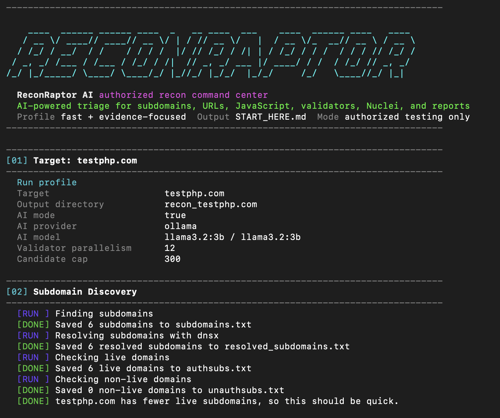

Discover scope
Subdomains are discovered, resolved, and probed before URL collection begins.
Authorized recon command center
A Bash recon workflow for approved security testing: discover assets, collect URLs, analyze JavaScript, validate high-signal leads, and package the results for review.

How it runs
Subdomains are discovered, resolved, and probed before URL collection begins.
Historical and crawled URLs are merged, sorted, and filtered for high-signal paths.
Live JS files are downloaded and scanned with Gitleaks plus built-in indicators.
Focused validators check exposed files, redirects, CORS, GraphQL, storage, and takeovers.
Optional AI groups findings, ranks likely impact, and leaves a human-readable summary.
Result navigation
recon_example.com
ReconRaptor separates raw discovery, report files, candidate lists, and evidence so the next reviewer can move from overview to proof without digging through one noisy directory.
Install
git clone https://github.com/Zuri09/ReconRaptor.git
cd ReconRaptor
chmod +x install.sh reconraptor.sh
./install.sh --with-ollama
./reconraptor.sh -d example.com --ai --ai-provider ollamaReconRaptor AI is for assets you own or are explicitly authorized to test. Treat scanner and AI output as triage until you reproduce the issue manually.